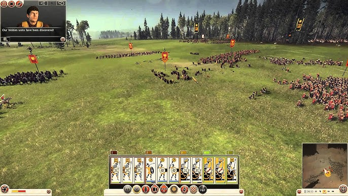
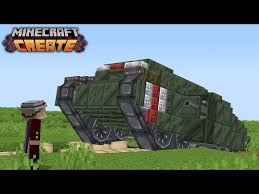
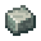
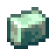
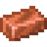
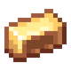
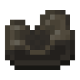

Ma passion est les jeux vidéos. En ce moment, je joue un peu à Minecraft avec des mods, mais je joue plus à Total War: Rome 2.
Total War: Rome 2 (aussi appeler TWR2) est un jeu de stratégie qui est un mélange de RTS et d'un jeu grande stratégie comme HoI4. Dans le jeu, on controlle une civilisation pendant l'antiquité comme Rome ou Perse et on amène notre armée dans des combats avec les autres nations. On doit aussi aménager notre propre civilisation pour que le gens soient contents et ne pas être conquis par les autres nations. TWR2 a aussi un mode libre, où on peut créer nos propres batailles. Si tu s'ennuis du jeu de base, tu peux aussi télécharger des mods faits par la communauté de TWR2. Total War est une séries de jeux similaires à ce jeu comme Total War: Shogun 2 ou Total War: Medieval 2.

Jsuis sûre que vous avez déja entendu de Minecraft. Si vous ne savez pas quessé est Minecraft, c'est un jeu sandbox ou le monde est composé de cubes destructibles. Minecraft a 3 modes: survie, créatif et hardcore. Je vais pas l'expliquer, parce que ca va prendre trop de temps. On peut aussi joindre des serveurs pour jouer ou de battre des autres joueurs et jouer avec des amis. Le jeu a aussi 2 éditions: Java édition et Bedrock édition. Java est seulemnt sure PC et Bedrock est en bref sur toutes les plateformes comme Playstation ou cellulaire. Le communauté de Minecraft est vraiment gros et les moddeurs sur Java édition ont créer des millions de mods comme l'image en-dessous qui est une combination de quelques mods. On peut les télécharger sur des sites comme Modrinth et Curseforge.






{kind=link}